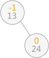
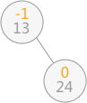
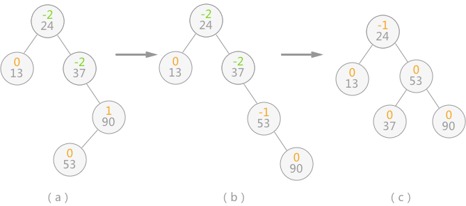

平衡二叉树（AVL树）及C语言实现
上一节介绍如何使用二叉排序树实现动态查找表，本节介绍另外一种实现方式——平衡二叉树。
平衡二叉树，又称为 AVL 树。实际上就是遵循以下两个特点的二叉树：

图 1 平衡与不平衡的二叉树及结点的平衡因子
平衡因子：每个结点都有其各自的平衡因子，表示的就是其左子树深度同右子树深度的差。平衡二叉树中各结点平衡因子的取值只可能是：0、1 和 -1。
例如，使用上一节的算法在对查找表

图 2 平衡二叉树
当继续插入 37 时，生成的二叉排序树如图 3（a），平衡二叉树的结构被破坏，此时只需要对二叉排序树做“旋转”操作（如图 3（b）），即整棵树以结点 24 为根结点，二叉排序树的结构没有破坏，同时将该树转化为了平衡二叉树：

图 3 二叉排序树变为平衡二叉树的过程
做完以上操作，即完成了由不平衡的二叉排序树转变为平衡二叉树。
当平衡二叉树由于新增数据元素导致整棵树的平衡遭到破坏时，就需要根据实际情况做出适当的调整，假设距离插入结点最近的“不平衡因子”为 a。则调整的规律可归纳为以下 4 种情况：
平衡二叉树，又称为 AVL 树。实际上就是遵循以下两个特点的二叉树：
- 每棵子树中的左子树和右子树的深度差不能超过 1；
- 二叉树中每棵子树都要求是平衡二叉树；
其实就是在二叉树的基础上，若树中每棵子树都满足其左子树和右子树的深度差都不超过 1，则这棵二叉树就是平衡二叉树。
图 1 平衡与不平衡的二叉树及结点的平衡因子
如图 1 所示，其中 （a） 的两棵二叉树中由于各个结点的平衡因子数的绝对值都不超过 1，所以 （a） 中两棵二叉树都是平衡二叉树；而 （b） 的两棵二叉树中有结点的平衡因子数的绝对值超过 1，所以都不是平衡二叉树。
二叉排序树转化为平衡二叉树
为了排除动态查找表中不同的数据排列方式对算法性能的影响，需要考虑在不会破坏二叉排序树本身结构的前提下，将二叉排序树转化为平衡二叉树。例如，使用上一节的算法在对查找表
{13，24，37，90，53}构建二叉排序树时，当插入 13 和 24 时，二叉排序树此时还是平衡二叉树：

图 2 平衡二叉树
图 3 二叉排序树变为平衡二叉树的过程
继续插入 90 和 53 后，二叉排序树如图 4（a）所示，导致二叉树中结点 24 和 37 的平衡因子的绝对值大于 1 ，整棵树的平衡被打破。此时，需要做两步操作：当二叉排序树的平衡性被打破时，就如同扁担的两头出现了一头重一头轻的现象，如图3（a）所示，此时只需要改变扁担的支撑点（树的树根），就能使其重新归为平衡。实际上图 3 中的 （b） 是对（a） 的二叉树做了一个向左逆时针旋转的操作。
- 如图 4（b） 所示，将结点 53 和 90 整体向右顺时针旋转，使本该以 90 为根结点的子树改为以结点 53 为根结点；
- 如图 4（c） 所示，将以结点 37 为根结点的子树向左逆时针旋转，使本该以 37 为根结点的子树，改为以结点 53 为根结点；

图 4 二叉排序树转化为平衡二叉树
图 4 二叉排序树转化为平衡二叉树
做完以上操作，即完成了由不平衡的二叉排序树转变为平衡二叉树。
当平衡二叉树由于新增数据元素导致整棵树的平衡遭到破坏时，就需要根据实际情况做出适当的调整，假设距离插入结点最近的“不平衡因子”为 a。则调整的规律可归纳为以下 4 种情况：
-
单向右旋平衡处理：若由于结点 a 的左子树为根结点的左子树上插入结点，导致结点 a 的平衡因子由 1 增至 2，致使以 a 为根结点的子树失去平衡，则只需进行一次向右的顺时针旋转，如下图这种情况：

图 5 单向右旋 -
单向左旋平衡处理：如果由于结点 a 的右子树为根结点的右子树上插入结点，导致结点 a 的平衡因子由 -1变为 -2，则以 a 为根结点的子树需要进行一次向左的逆时针旋转，如下图这种情况：

图 6 单向左旋
-
双向旋转（先左后右）平衡处理：如果由于结点 a 的左子树为根结点的右子树上插入结点，导致结点 a 平衡因子由 1 增至 2，致使以 a 为根结点的子树失去平衡，则需要进行两次旋转操作，如下图这种情况：

图 7 双向旋转（先左后右）
注意：图 7 中插入结点也可以为结点 C 的右孩子，则（b）中插入结点的位置还是结点 C 右孩子，（c）中插入结点的位置为结点 A 的左孩子。 -
双向旋转（先右后左）平衡处理：如果由于结点 a 的右子树为根结点的左子树上插入结点，导致结点 a 平衡因子由 -1 变为 -2，致使以 a 为根结点的子树失去平衡，则需要进行两次旋转（先右旋后左旋）操作，如下图这种情况：

图 8 双向旋转（先右后左）
注意：图 8 中插入结点也可以为结点 C 的右孩子，则（b）中插入结点的位置改为结点 B 的左孩子，（c）中插入结点的位置为结点 B 的左孩子。
{13，24，37，90，53}构建平衡二叉树时，由于符合第 4 条的规律，所以进行先右旋后左旋的处理，最终由不平衡的二叉排序树转变为平衡二叉树。
构建平衡二叉树的代码实现
#include <stdio.h>
#include <stdlib.h>
//分别定义平衡因子数
#define LH +1
#define EH 0
#define RH -1
typedef int ElemType;
typedef enum {false,true} bool;
//定义二叉排序树
typedef struct BSTNode{
ElemType data;
int bf;//balance flag
struct BSTNode *lchild,*rchild;
}*BSTree,BSTNode;
//对以 p 为根结点的二叉树做右旋处理，令 p 指针指向新的树根结点
void R_Rotate(BSTree* p)
{
//借助文章中的图 5 所示加以理解，其中结点 A 为 p 指针指向的根结点
BSTree lc = (*p)->lchild;
(*p)->lchild = lc->rchild;
lc->rchild = *p;
*p = lc;
}
////对以 p 为根结点的二叉树做左旋处理，令 p 指针指向新的树根结点
void L_Rotate(BSTree* p)
{
//借助文章中的图 6 所示加以理解，其中结点 A 为 p 指针指向的根结点
BSTree rc = (*p)->rchild;
(*p)->rchild = rc->lchild;
rc->lchild = *p;
*p = rc;
}
//对以指针 T 所指向结点为根结点的二叉树作左子树的平衡处理，令指针 T 指向新的根结点
void LeftBalance(BSTree* T)
{
BSTree lc,rd;
lc = (*T)->lchild;
//查看以 T 的左子树为根结点的子树，失去平衡的原因，如果 bf 值为 1 ，则说明添加在左子树为根结点的左子树中，需要对其进行右旋处理；反之，如果 bf 值为 -1，说明添加在以左子树为根结点的右子树中，需要进行双向先左旋后右旋的处理
switch (lc->bf)
{
case LH:
(*T)->bf = lc->bf = EH;
R_Rotate(T);
break;
case RH:
rd = lc->rchild;
switch(rd->bf)
{
case LH:
(*T)->bf = RH;
lc->bf = EH;
break;
case EH:
(*T)->bf = lc->bf = EH;
break;
case RH:
(*T)->bf = EH;
lc->bf = LH;
break;
}
rd->bf = EH;
L_Rotate(&(*T)->lchild);
R_Rotate(T);
break;
}
}
//右子树的平衡处理同左子树的平衡处理完全类似
void RightBalance(BSTree* T)
{
BSTree lc,rd;
lc= (*T)->rchild;
switch (lc->bf)
{
case RH:
(*T)->bf = lc->bf = EH;
L_Rotate(T);
break;
case LH:
rd = lc->lchild;
switch(rd->bf)
{
case LH:
(*T)->bf = EH;
lc->bf = RH;
break;
case EH:
(*T)->bf = lc->bf = EH;
break;
case RH:
(*T)->bf = EH;
lc->bf = LH;
break;
}
rd->bf = EH;
R_Rotate(&(*T)->rchild);
L_Rotate(T);
break;
}
}
int InsertAVL(BSTree* T,ElemType e,bool* taller)
{
//如果本身为空树，则直接添加 e 为根结点
if ((*T)==NULL)
{
(*T)=(BSTree)malloc(sizeof(BSTNode));
(*T)->bf = EH;
(*T)->data = e;
(*T)->lchild = NULL;
(*T)->rchild = NULL;
*taller=true;
}
//如果二叉排序树中已经存在 e ，则不做任何处理
else if (e == (*T)->data)
{
*taller = false;
return 0;
}
//如果 e 小于结点 T 的数据域，则插入到 T 的左子树中
else if (e < (*T)->data)
{
//如果插入过程，不会影响树本身的平衡，则直接结束
if(!InsertAVL(&(*T)->lchild,e,taller))
return 0;
//判断插入过程是否会导致整棵树的深度 +1
if(*taller)
{
//判断根结点 T 的平衡因子是多少，由于是在其左子树添加新结点的过程中导致失去平衡，所以当 T 结点的平衡因子本身为 1 时，需要进行左子树的平衡处理，否则更新树中各结点的平衡因子数
switch ((*T)->bf)
{
case LH:
LeftBalance(T);
*taller = false;
break;
case EH:
(*T)->bf = LH;
*taller = true;
break;
case RH:
(*T)->bf = EH;
*taller = false;
break;
}
}
}
//同样，当 e>T->data 时，需要插入到以 T 为根结点的树的右子树中，同样需要做和以上同样的操作
else
{
if(!InsertAVL(&(*T)->rchild,e,taller))
return 0;
if (*taller)
{
switch ((*T)->bf)
{
case LH:
(*T)->bf = EH;
*taller = false;
break;
case EH:
(*T)->bf = RH;
*taller = true;
break;
case RH:
RightBalance(T);
*taller = false;
break;
}
}
}
return 1;
}
//判断现有平衡二叉树中是否已经具有数据域为 e 的结点
bool FindNode(BSTree root,ElemType e,BSTree* pos)
{
BSTree pt = root;
(*pos) = NULL;
while(pt)
{
if (pt->data == e)
{
//找到节点，pos指向该节点并返回true
(*pos) = pt;
return true;
}
else if (pt->data>e)
{
pt = pt->lchild;
}
else
pt = pt->rchild;
}
return false;
}
//中序遍历平衡二叉树
void InorderTra(BSTree root)
{
if(root->lchild)
InorderTra(root->lchild);
printf("%d ",root->data);
if(root->rchild)
InorderTra(root->rchild);
}
int main()
{
int i,nArr[] = {1,23,45,34,98,9,4,35,23};
BSTree root=NULL,pos;
bool taller;
//用 nArr查找表构建平衡二叉树（不断插入数据的过程）
for (i=0;i<9;i++)
{
InsertAVL(&root,nArr[i],&taller);
}
//中序遍历输出
InorderTra(root);
//判断平衡二叉树中是否含有数据域为 103 的数据
if(FindNode(root,103,&pos))
printf("\n%d\n",pos->data);
else
printf("\nNot find this Node\n");
return 0;
}
运行结果
1 4 9 23 34 35 45 98
Not find this Node
Not find this Node
总结
使用平衡二叉树进行查找操作的时间复杂度为O(logn)。在学习本节内容时，紧贴本节图示比较容易理解。关注公众号「站长严长生」，在手机上阅读所有教程，随时随地都能学习。内含一款搜索神器，免费下载全网书籍和视频。

微信扫码关注公众号